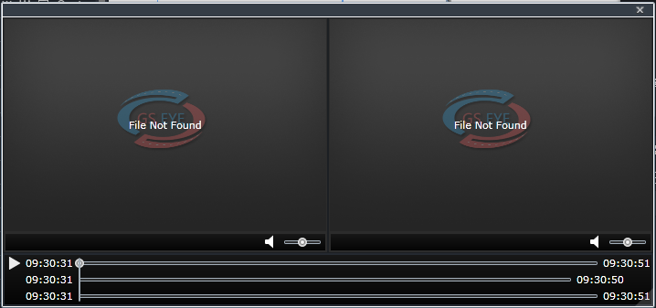

查看报警视频
报警时，根据系统设置，安全套件会自动上传报警前后一段时间内（一般为15S）的视频文件信息，用户可调阅查看报警视频，对警情进行判断。
| 1. | 在车辆报警主界面的警情列表中选择警情，单击〖〗按钮，打开报警视频播放窗口，如图所示。

Fig 42 报警视频播放窗口 |
| 2. | 在报警视频播放窗口，单击〖〗按钮，开始同步播放上传的多路历史视频，单击单个窗口中的〖〗按钮，可静音视频窗口，单击〖〗，可关闭报警视频播放窗口。
|